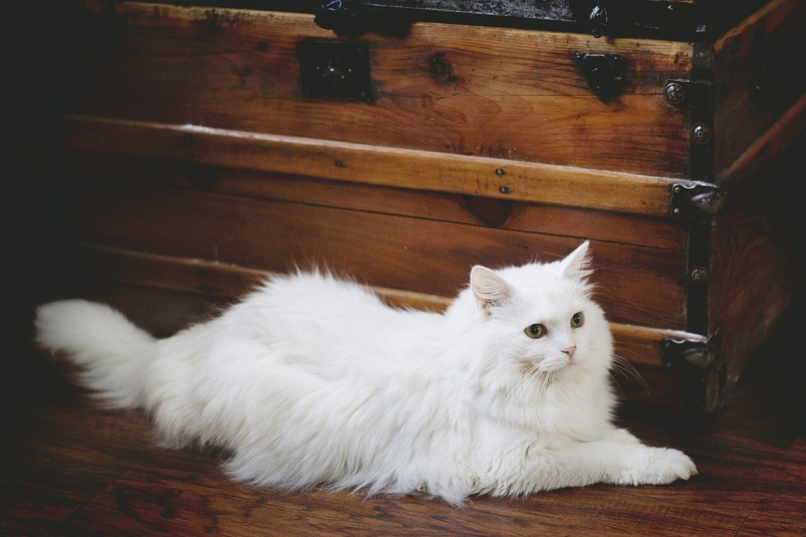

- Kisebb ragadozó emlősök közé tartozó, kerek fejű, nyúlánk, ruganyos testű, különféle színű háziállat kicsinye.
- A szibériai husky a munkakutyák (szánhúzás, teherhordás, vadászat) közé tartozik, közepes méretű, Kelet-Szibériából származik. Onnan elterjedt Alaszkában és Kanadában is. Szőrzete vastag, szagtalan, évente kétszer igen erősen vedlik, színe ordas vagy szürkés, nemritkán ezüstös színű.
- A gepárd (Acinonyx jubatus) a macskafélék családjába tartozó Acinonyx nem egyetlen élő faja. Jellegzetes ragadozó, mely lopakodás vagy falkában vadászás helyett inkább gyorsasági fölényét kihasználva ejti el áldozatát. A gepárd a leggyorsabb szárazföldi emlős.